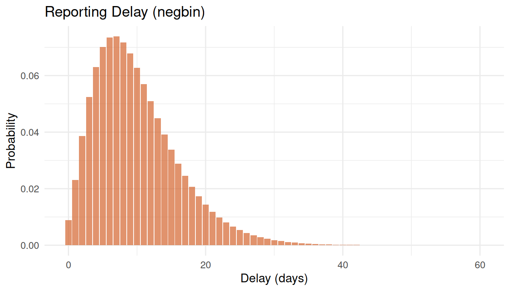

The right-truncation problem
From sample collection to sequence upload, there is a delay of typically 1–4 weeks. This means that when you look at the latest data, the most recent weeks are always incomplete — not because fewer people were infected, but because results have not arrived yet.
If you ignore this and plot raw counts, you see a false decline in the most recent weeks. This is called right-truncation bias.
Estimating the delay distribution
survinger fits a parametric delay distribution accounting for the fact that we can only observe delays shorter than the time elapsed since collection (right-truncation correction).
library(survinger)
data(sarscov2_surveillance)
design <- surv_design(
data = sarscov2_surveillance$sequences,
strata = ~ region,
sequencing_rate = sarscov2_surveillance$population[c("region", "seq_rate")],
population = sarscov2_surveillance$population
)
delay_fit <- surv_estimate_delay(design, distribution = "negbin")
print(delay_fit)
#> ── Reporting Delay Distribution ────────────────────────────────────────────────
#> Distribution: "negbin"
#> Strata: none (pooled)
#> Observations: 1349
#> Mean delay: 9.9 days
#>
#> # A tibble: 1 × 5
#> stratum distribution mu size converged
#> <chr> <chr> <dbl> <dbl> <lgl>
#> 1 all negbin 9.95 3.52 TRUE
plot(delay_fit)
Reporting probability
Given the fitted delay, we can ask: what fraction of sequences collected d days ago have been reported by now?
days <- c(7, 14, 21, 28)
probs <- surv_reporting_probability(delay_fit, delta = days)
data.frame(days_ago = days, prob_reported = round(probs, 3))
#> days_ago prob_reported
#> 1 7 0.403
#> 2 14 0.797
#> 3 21 0.949
#> 4 28 0.989Sequences collected 7 days ago may only be partially reported, while those from 28 days ago are nearly complete.
Nowcasting
Nowcasting inflates observed counts by dividing by the reporting probability, giving a better estimate of the true number:
nowcast <- surv_nowcast_lineage(design, delay_fit, "BA.2.86")
plot(nowcast)
Observed (grey bars) vs nowcasted (orange line) counts for BA.2.86
The grey bars show what has been observed; the orange line shows the delay-corrected estimate. The gap is largest in the most recent weeks.
Combined design + delay correction
The main inference function applies both corrections simultaneously:
adjusted <- surv_adjusted_prevalence(design, delay_fit, "BA.2.86")
print(adjusted)
#> ── Design-Weighted Delay-Adjusted Prevalence ───────────────────────────────────
#> Correction: "design:hajek+delay:direct"
#>
#> # A tibble: 26 × 9
#> time lineage n_obs_raw n_obs_adjusted prevalence se ci_lower ci_upper
#> <chr> <chr> <int> <dbl> <dbl> <dbl> <dbl> <dbl>
#> 1 2024-W01 BA.2.86 53 53 0 0 0 0
#> 2 2024-W02 BA.2.86 68 68 0.00597 0.0178 0 0.0408
#> 3 2024-W03 BA.2.86 40 40 0.143 0.126 0 0.389
#> 4 2024-W04 BA.2.86 41 41 0 0 0 0
#> 5 2024-W05 BA.2.86 48 48 0 0 0 0
#> 6 2024-W06 BA.2.86 52 52 0 0 0 0
#> 7 2024-W07 BA.2.86 62 62 0.00740 0.0204 0 0.0473
#> 8 2024-W08 BA.2.86 55 55 0.0195 0.0332 0 0.0847
#> 9 2024-W09 BA.2.86 43 43 0.0261 0.0480 0 0.120
#> 10 2024-W10 BA.2.86 46 46 0.0697 0.0621 0 0.191
#> # ℹ 16 more rows
#> # ℹ 1 more variable: mean_report_prob <dbl>The mean_report_prob column shows how complete each
week’s data is. Low values indicate that the delay correction is doing
heavy lifting.
Choosing a delay distribution
-
negbin(default): Handles overdispersion well. Recommended for most settings. -
poisson: Use when delays are very regular (rare). -
lognormal: Use when delays have a heavy right tail. -
nonparametric: No distributional assumption. Use when you have enough data and suspect the parametric forms do not fit.